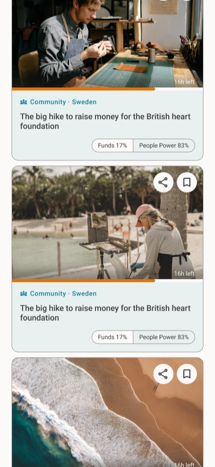
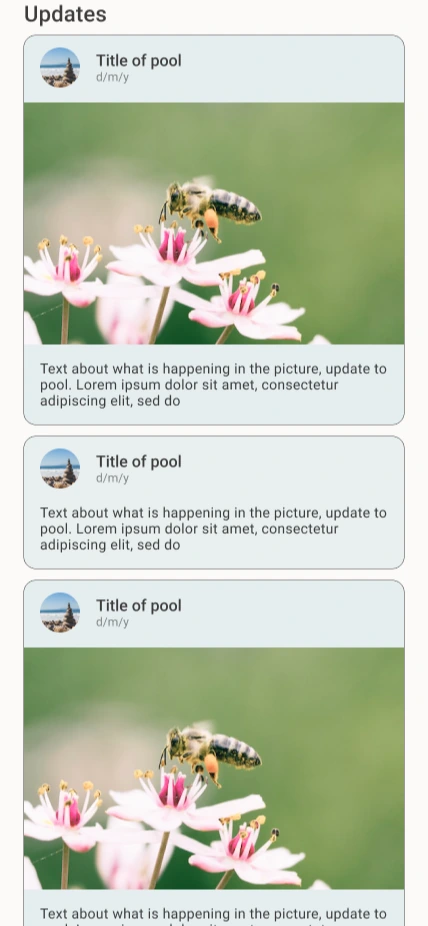
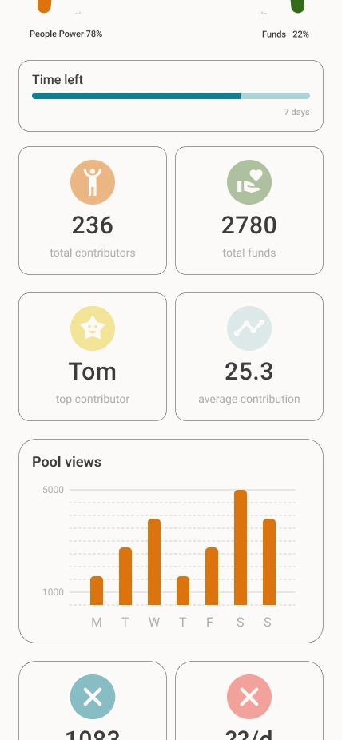

Contribution is broader than cash
Support can be a skill, a room, a signature, a spare hour, a network, or a voice.
Poola helps people back the causes, creators, neighbourhoods and ideas they care about with money, skills, resources, time and voice.
All these worlds, combined into one place.
One home for every kind of crowd action
Why it matters
Traditional crowd-funding made support feel narrow: donate, share, wait. But most people have more to give than money, and most projects need more than a payment rail.
Poola turns every campaign into a living Pool, where financial backing and People Power grow side by side.
Support can be a skill, a room, a signature, a spare hour, a network, or a voice.
Every Pool shows what is funded, what is powered, and what still needs help.
Updates, progress signals and community actions make support easier to believe in.
The Poola engine
A Pool can grow through money, work, things, attendance, signatures and amplification. Tap each contribution type to see how Poola makes it legible.
Direct pledges give a Pool its financial base, with transparent progress and simple fees.
Product shape
Poola brings discovery, contribution, updates and creator tools into one polished flow.
Every Pool can ask for exactly what it needs: capital, expertise, supplies, volunteers, attendance or collective voice.
Find causes around you or follow projects across borders from a feed tuned to participation.
Two signals tell the full story: what is funded and what is powered by people.
Pool starters can see what is moving, what is stuck and what action to ask for next.
Product evidence
The stills now support the story instead of carrying the whole website. Each one has a clear role in the product narrative.



Who it serves
Raise money, recruit volunteers, collect supplies and keep supporters close.
Build a crowd around the work, not just a one-off campaign page.
Validate, recruit, fund and activate early believers from one place.
Download Poola
Poola is being packaged for mobile and desktop. Download buttons are marked honestly until store pages and app files are ready.
Designed for discovering, backing and following Pools on the go.
The same People Power model for Android supporters and Pool starters.
Manage Pools, review progress and coordinate community action.
A focused desktop workspace for running campaigns with clarity.
Built for operators and teams who want Poola on their own machines.